- TOP
- 一般歯科｜虫歯治療・根管治療・歯周病治療
名古屋市南区道徳にある家族みんなで通える歯医者【名古屋みなみ歯科・矯正歯科】。こちらでは、当院の虫歯治療・根管治療・歯周病治療について詳しくご案内しています。
Other虫歯治療
「歯が痛い」「しみる」「表面が黒っぽくなっている」こんな症状は虫歯のサインかもしれません。初期段階ではなかなか自覚症状が出ない虫歯。そのため気づいたときにはかなり進行していた……というケースも珍しくはありません。大切なのは早期発見・早期治療に努めることです。それが、虫歯から歯を守ることにつながります。
虫歯の原因とは？
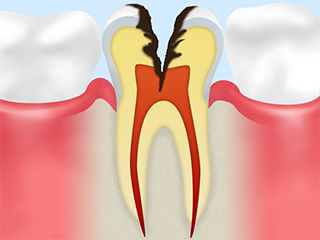
虫歯の原因は1つではありません。大きな要素として挙げられるのは「虫歯菌」「糖質」「歯質」「時間」。この4つの要素が重なることで、虫歯の発症リスクが高まります。たとえばブラッシングが不十分で虫歯菌の棲み処となるプラークが蓄積し、そこへ栄養源となる糖質がプラスされ、その状態で長時間経過すると……。虫歯リスクはどんどん高まっていくのです。
虫歯の進行段階と治療方法
※表は左右にスクロールして確認することができます。
| C0 ごく初期の虫歯 |
C1 エナメル質の虫歯 |
C2 象牙質の虫歯 |
C3 神経の虫歯 |
C4 歯の根の虫歯 |
|---|---|---|---|---|
| 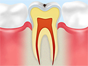 | 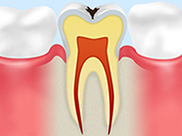 | 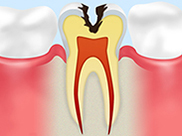 | 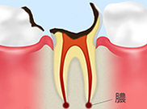 | |
| 歯の表面のエナメル質が少し溶けていますが、まだ穴は見られず、痛みもありません。適切なブラッシングやフッ素塗布で治癒できる可能性があります。 | 表面に穴が開きはじめ、黒ずんだように見えます。虫歯部分を削って、詰め物で補う治療を行います。 | エナメル質の下の象牙質まで虫歯が達し、痛みなどの自覚症状が出始めます。虫歯部分を削って、詰め物や被せ物で補う治療を行います。 | 歯の奥にある神経まで虫歯が到達。激しい痛みを感じることがあります。虫歯菌に侵された血管や神経を除去した上で洗浄・薬剤を充填する根管治療を行います。 | 虫歯が歯根まで達し、歯茎の上に出ている部分の歯はほとんど溶けた状態。ここまでくると多くの場合は抜歯となります。 |
歯を残したまま虫歯治療～ドッグスベストセメント治療～
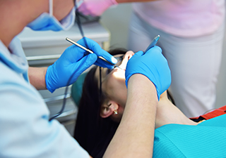
銅イオンが含まれている「ドックセメント」を虫歯を削った箇所に塗布することで、虫歯の病巣を無菌化する治療法です。歯髄をできる限り保存しようとする方法で、神経を取って歯がもろくなる心配がありません。また象牙質の再生作用も期待でき、歯の寿命を大きく伸ばせる可能性があります。
ドッグスベストセメントは、こんな方におすすめです。
- かなり前に虫歯治療を受けたときの詰め物が取れてしまった
- 麻酔の痛みが苦手な方
- なるべくなら歯を削りたくない方
- 神経を残して治療したい方
- アレルギーが心配な方
- 同じ歯の治療を何度も行っている方
| メリット | デメリット |
|---|---|
| 通常の治療よりも削る量が少なく済むため、治療時の痛みも軽減できます。また短期間での治療が可能で、再発リスクを抑えることもできます。 | 重度まで進行した虫歯には適用できません。また治療そのものに加え、詰め物・被せ物もすべて自費診療となります。 |
費用
| ドッグスベストセメント | 10,000円（1歯） |
|---|
進行した虫歯の治療法～根管治療～
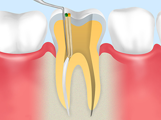
以前は神経まで達した虫歯の場合、抜歯しか治療法がありませんでした。しかし現在は根管治療を行うことによって、歯を残せる可能性があります。根管治療とは歯の神経が通っている管の中にある血管・神経を除去し、洗浄した上で薬剤を詰める治療法。根管は複雑な形をしていて、とても高度な治療技術が求められます。
根管内に細菌が残ると再発のリスクにつながることも。当院では精密な根管治療のために適切な器具を導入・活用し、確実な根管治療を実現しています。
歯周病治療
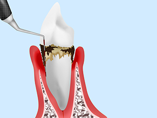
日本人の成人のうち約8割が歯周病、またはその予備軍だと言われていることをご存知でしょか？ 歯周病は進行すると歯を失うことにつながる怖い病気です。大切なのはまず歯周病にならないように予防すること。そしてもし少しでも気になる症状があれば、早めに歯科医院で検査を受け、適切なケアを行いましょう。
歯周病セルフチェック！
一つでも当てはまるものがあれば、お早めの受診をおすすめします。
- 食べ物が歯に詰まりやすくなった
- 歯に触れるとグラつく
- 歯茎が腫れている
- 歯が浮いているように感じる
- 起床時、口の中がネバネバする
- 口臭が気になるようになった
- 歯茎が下がり、歯が長くなったように感じる
- 歯茎から血や膿が出る
- 硬い物を噛めなくなった
- 歯がしみる
歯周病とは？
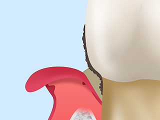
お口の中のプラークに住む歯周病菌によって、歯茎や顎の骨の炎症が引き起こされる病気です。悪化すると顎の骨が溶かされ、突然歯が抜け落ちてしまうことも。また歯周病菌が血管や気管から体内に入り込むことで、糖尿病、早産、心臓病、肺炎などの全身疾患のリスクにつながることもわかってきました。
歯周病リスクを高めるリスク
- 不規則な生活習慣は免疫力の低下につながり、歯周病菌が繁殖しやすくなります
- 喫煙習慣は口腔内環境の悪化につながります
- 歯ぎしりや食いしばりによって歯根、顎の骨に過度な負担がかかると、歯周病が進行する原因になります
- ブラッシングが不十分だとプラークが蓄積し、歯周病が進行しやすくなります
歯周病の進行と治療法
※表は左右にスクロールして確認することができます。
| 進行段階 | 状態 | 治療 |
|---|---|---|
歯肉炎／軽度歯周炎 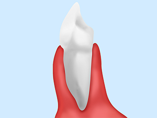 |
歯肉に軽い炎症があり、ブラッシング時に出血することがあります。 | 適切なブラッシングで健康な歯肉に戻りやすい状態です。ブラッシング指導で適切なケアをアドバイスし、スケーリングで歯石を除去します。 |
中等度歯周炎 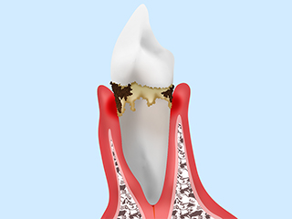 |
顎の骨が溶けはじめています。歯の動揺や浮くような感覚があり、膿が出たり口臭が強くなったりします。 | 歯と歯茎の隙間に付着したプラーク・歯石を取り除く「ルートプレーニング」や、歯周ポケット内のプラーク・歯石・炎症がある歯周組織を除去する外科処置「歯周ポケットそうは術」を行います。 |
重度歯周炎 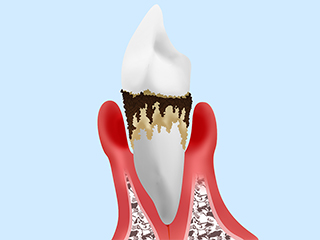 |
顎の骨がほとんど溶けた状態で、歯のグラつきが大きくなり、歯茎が真っ赤に腫れます。 | 麻酔をした上で歯茎を顎の骨からはがし、歯根のプラーク・歯石・炎症がある歯周組織を除去する「フラップ手術」を行います。 |